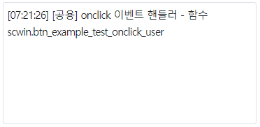

컴포넌트의 함수 'bind'의 예제입니다. 함수 'bind'는 이벤트 핸들러를 추가하는 기능을 제공합니다.
스크립트로 컴포넌트에 이벤트 연결(추가)하기
이 예제는 예제 화면의 영역 [로그 확인]의 textarea에 참고용 로그를 출력하고 있습니다.
그림 1.로그 출력 영역 참고 이미지

onclick 이벤트의 핸들러로 "scwin.btn_example_test_onclick_user"가 선언되어 있습니다. 이 핸들러는 스크립트로 onclick 이벤트 핸들러를 등록할 때 사용됩니다.
이 핸들러는 아래와 같은 문자열을 출력합니다.
[로그 예시]
[공용] onclick 이벤트 핸들러 - 함수 scwin.btn_example_test_onclick_user영역 [이벤트 연결하기]의 버튼 테스트 버튼 1에는 이벤트가 등록되어 있지 않은 상태입니다.
이벤트가 발생하지 않습니다.
영역 [로그 확인]에 출력된 로그를 확인합니다.
출력된 로그가 없습니다.
버튼 테스트 버튼 1에 onclick 핸들러가 추가됩니다.
영역 [로그 확인]에 출력된 로그를 확인합니다.
실행된 스크립트 예시가 출력됩니다.
[로그 예시]
[05:42:55] ** 함수 scwin.btn_ex1_onclick **
[05:42:55] btn_exam_test1.bind("onclick", scwin.btn_example_test_onclick_user);
-----------------------------------------------------------------
(출력된 로그를 삭제합니다.)
등록된 onclick 이벤트 핸들러가 실행됩니다.
영역 [로그 확인]에 출력된 로그를 확인합니다.
[로그 예시]
[05:48:51] [공용] onclick 이벤트 핸들러 - 함수 scwin.btn_example_test_onclick_user
[05:48:51] e.exampleParam : undefined
STEP1. 이벤트 핸들러로 사용할 함수를 정의합니다.
/** * click event handler */ scwin.btn_example_test_onclick_user = function (e) { //로직 구현 };
STEP2. click 이벤트의 이벤트 핸들러를 등록합니다.
//id가 btn_example_test인 컴포넌트의 예시입니다. //컴포넌트에 onclick 이벤트 핸들러(scwin.btn_example_test_onclick_user) 연결 btn_example_test.bind("onclick", scwin.btn_example_test_onclick_user);
bind( eventType , function )